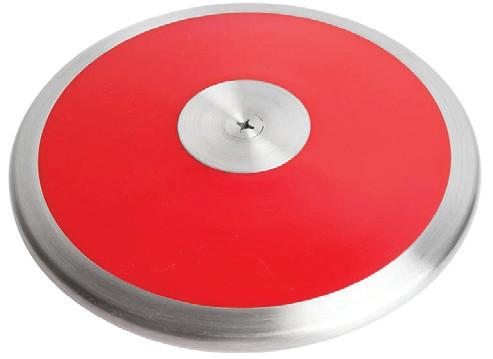
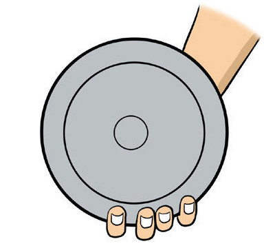
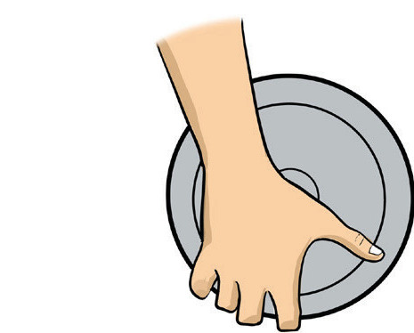
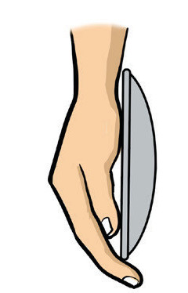

Other supporting equipment includes a tape measure for measuring the length of the discus throw; flags used to signal a valid or invalid throw, and a recording sheet for keeping scores and other details of the thrower.
Fundamental skills for discus throw
The discus throwers aim to throw the discus effectively as far as possible. The following are the fundamental skills for discus throw.
(a) Gripping the discus
Gripping the discus is the act of holding the implement in a proper position. Gripping influences the way the discus is released and the direction in which it is thrown. The following are steps for gripping the discus:
(i)
Hold the discus on your non-throwing hand for support;
(ii)
Place your throwing hand on top of the discus;
(iii)
Spread evenly your fingers on the rim of the discus;
(iv)
Hold the discus properly at the first joint of your fingers resting the first knuckle over the rim;
(v)
Place your fingertips firmly over the discus ensuring most of the pressure being applied by the fingers, not the palm; and
(vi)
Keep your wrist straight and relaxed as shown in Figure 2.15 (a, b and c).

(a) Front view

(b) Back view

(c) Side view